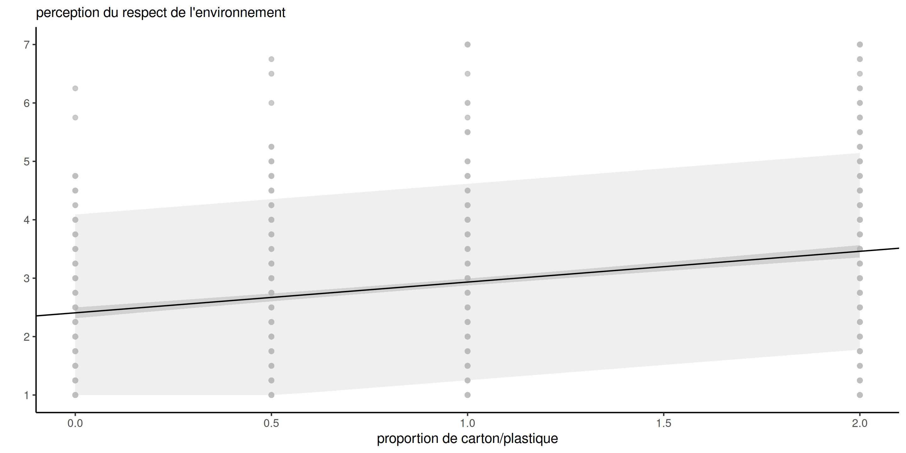
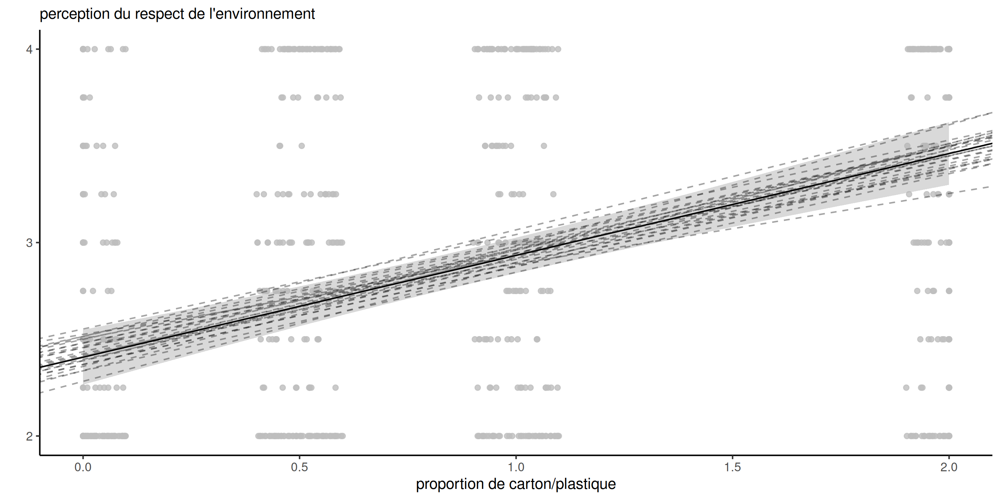
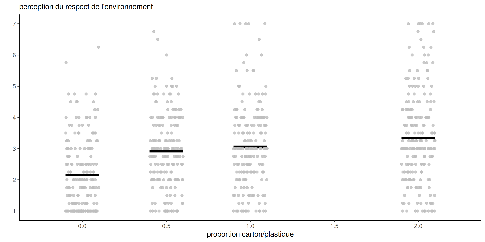

data(SKD23_S2A, package = "hecedsm") # charger les données
lm_simple <- lm(pef ~ proportion, data = SKD23_S2A) # régression linéaire simple
predict(lm_simple,
newdata = data.frame(proportion = c(0, 0.5, 1, 2)),
interval = "prediction") # intervalles de prédiction
predict(lm_simple,
newdata = data.frame(proportion = c(0, 0.5, 1, 2)),
interval = "confidence") # IC de confiance pour la moyenneModélisation statistique
04. Modèles linéaires
Léo Belzile, HEC Montréal
2024
Loi des estimateurs
En supposant que \(Y_i \sim \mathsf{normal}(\mathbf{x}_i \boldsymbol{\beta}, \sigma^2)\) pour \(i=1, \ldots, n\) sont des observations indépendantes, l’estimateur des moindres carrés ordinaires suit une loi normale \[\begin{align*} \widehat{\boldsymbol{\beta}} = \left(\mathbf{X}^\top \mathbf{X}\right)^{-1}\mathbf{X}^\top \boldsymbol{y} \sim \mathsf{normal}\left\{\boldsymbol{\beta}, \sigma^2 (\mathbf{X}^\top\mathbf{X})^{-1}\right\}. \end{align*}\]
- On définit le \(i\)e résidu ordinaire \(e_i = y_i - \mathbf{x}_i \widehat{\boldsymbol{\beta}}\).
- La somme du carré des erreurs est \(\sum_{i=1}^n e_i^2 = \mathsf{SC}_e\).
- On peut montrer que \(S^2=\mathsf{SC}_e/(n-p-1)\) est un estimateur non-biaisé de la variance \(\sigma^2\).
- Aussi, \(\mathsf{SC}_e \sim \sigma^2 \chi^2_{n-p-1}\) et \(\mathsf{SC}_e\) est indépendant de \(\widehat{\boldsymbol{\beta}}\).
Prédiction
Si l’on veut prédire la valeur d’une nouvelle observation, disons \(Y^*\), dont le vecteur de variables explicatives \(\mathbf{x}^* = (1, x^*_1, \ldots, x^*_p)\) sont connues, la prédiction sera \(\widehat{y}^* = \mathbf{x}^*\widehat{\boldsymbol{\beta}}\) parce que \[\begin{align*} \mathsf{E}(\widehat{Y}^* \mid \mathbf{X}, \mathbf{x}^*) = \mathsf{E}(\mathbf{x}^*\widehat{\boldsymbol{\beta}}\mid \mathbf{X}, \mathbf{x}^*) = \mathbf{x}^*\boldsymbol{\beta}. \end{align*}\]
Incertitude de la prédiction
Les observations individuelles varient davantage que les moyennes: en supposant que la nouvelle observation est indépendante de celles utilisées pour estimer les coefficients, \[\begin{align*} \mathsf{Va}(Y^*-\widehat{Y}^* \mid \mathbf{X}, \mathbf{x}^*) &= \mathsf{Va}(Y^* - \mathbf{x}^*\widehat{\boldsymbol{\beta}} \mid \mathbf{X}, \mathbf{x}^*) \\&=\mathsf{Va}(Y^* \mid \mathbf{X}, \mathbf{x}^*) + \mathsf{Va}(\mathbf{x}^*\widehat{\boldsymbol{\beta}} \mid \mathbf{X}, \mathbf{x}^*) \\& = \sigma^2 + \sigma^2\mathbf{x}^{*\vphantom{\top}}(\mathbf{X}^\top\mathbf{X})^{-1}\mathbf{x}^{*\top}. \end{align*}\]
La variabilité des prédictions est la somme de l’incertitude
- due aux estimateurs (basés sur des données aléatoires) et
- de la variance intrinsèque des observations.
Loi des prédictions
Puisque \(Y^*\) est tiré du modèle, on a \(Y^* \mid \mathbf{x}^* \sim \mathsf{normal}(\mathbf{x}^*\boldsymbol{\beta}, \sigma^2)\).
En se basant sur les propriétés des estimateurs, on peut obtenir les intervalles de prédictions de la loi Student-\(t\), \[\begin{align*} \frac{Y^*-\mathbf{x}^*\widehat{\boldsymbol{\beta}}}{\sqrt{S^2\{1+\mathbf{x}^*(\mathbf{X}^\top\mathbf{X})^{-1}\mathbf{x}^{*\top}\}}}\sim \mathsf{Student}(n-p-1). \end{align*}\] où \(S^2=\mathsf{SC}_e/(n-p-1)\) est l’estimateur sans biais de la variance \(\sigma^2\).
On obtient l’intervalle de prédiction de niveau \(1-\alpha\) pour \(Y^*\) en inversant la statistique de test \[\begin{align*} \mathbf{x}^*\widehat{\boldsymbol{\beta}}\pm \mathfrak{t}_{n-p-1}(\alpha/2)\sqrt{S^2\{1+\mathbf{x}^*(\mathbf{X}^\top\mathbf{X})^{-1}\mathbf{x}^{*\top}\}}. \end{align*}\]
Inférence pour la moyenne
Étant donné un vecteur ligne de taille \((p+1)\), disons \(\mathbf{x}\), contenant des variables explicatives, on peut calculer la moyenne \(\mu(\mathbf{x})=\mathbf{x}\boldsymbol{\beta}\).
Des calculs similaires pour les intervalles de confiance ponctuels pour la moyenne \(\mathbf{x}^*\boldsymbol{\beta}\) donnent \[\begin{align*} \mathbf{x}^*\widehat{\boldsymbol{\beta}}\pm \mathfrak{t}_{n-p-1}(\alpha/2)\sqrt{S^2\mathbf{x}^*(\mathbf{X}^\top\mathbf{X})^{-1}\mathbf{x}^{*\top}}. \end{align*}\] Les deux formules diffèrent uniquement au niveau de la variabilité.
Example
Sokolova, Krishna, et Döring (2023) tient compte des préjugés des consommateurs lorsqu’il s’agit d’évaluer le caractère écologique des emballages. Les auteurs supposent (et constatent) que, paradoxalement, les consommateurs ont tendance à considérer l’emballage comme plus écologique lorsque la quantité de carton ou de papier entourant la boîte est plus importante.
Les données de l’étude 2A contiennent des mesures de
- la perception du respect de l’environnement (PEF, variable
pef) - en fonction de la
proportiond’emballage en papier (soit aucun, soit la moitié de la surface du plastique, soit la même, soit le double).
Modèle pour l’étude
On ajuste un modèle de régression linéaire simple avec \[\texttt{pef} = \beta_0 + \beta_1 \texttt{proportion} + \varepsilon,\] où \(\varepsilon \sim \mathsf{normal}(0,\sigma^2)\) et on suppose les observations indépendantes.
Prédiction pour la régression linéaire simple
Figure 1: Prédictions avec intervalles de prédiction (à gauche) et intervalles de confiance pour la moyenne (à droite) de niveau 80%.
Forme des intervalles de prédiction
Figure 2: Prédictions avec intervalles de confiance à 95% pour la moyenne et droites potentielles. Les observations sont décalées horizontalement.
Largeur des intervalles
proportion |
prédiction | borne inf. | borne sup. |
|---|---|---|---|
| 0.0 | 2.41 | -0.168 | 4.98 |
| 0.5 | 2.67 | 0.097 | 5.24 |
| 1.0 | 2.93 | 0.361 | 5.51 |
| 2.0 | 3.46 | 0.884 | 6.04 |
| moyenne | borne inf. (IC 95%) | borne sup. (IC 95%) |
|---|---|---|
| 2.41 | 2.27 | 2.55 |
| 2.67 | 2.57 | 2.77 |
| 2.93 | 2.84 | 3.02 |
| 3.46 | 3.30 | 3.62 |
Prédictions dans R
Dans R, la fonction générique predict prend comme arguments
- un modèle
- une nouvelle base de données
newdatacontenant un tableau avec la même structure que les données qui ont servi à l’ajustement du modèle - un
type, indiquant l’échelle ("response"pour les modèles linéaires). - un
interval, soit"prediction"ou"confidence", pour les objets de classelm.
Tests d’hypothèses pour les modèles linéaires
Les tests d’hypothèses dans les modèles linéaires suivent la procédure usuelle: nous comparons deux modèles emboîtés, dont l’un (le modèle nul) est une simplification d’un modèle plus complexe (modèle alternatif) obtenu en imposant des restrictions sur les coefficients de la moyenne.
- Généralement, nous testons l’effet des variables explicatives (c’est-à-dire que nous fixons les coefficients moyens de \(\boldsymbol{\beta}\) correspondant à cette variable à \(0\)), ce qui équivaut à comparer les modèles avec et sans la variable explicative.
- Pour les variables continues ou binaires, il s’agit d’un seul coefficient, disons \(\beta_j\).
- Pour les variables catégorielles avec \(K\) niveaux, il y a \(K-1\) coefficients à mettre simultanément à zéro.
Tests de Wald
Rappelons que la statistique du test de Wald pour l’hypothèse \(\mathscr{H}_0: \beta_j=b\) est \[W = \frac{\widehat{\beta}_j - b}{\mathsf{se}(\widehat{\beta}_j)}.\] La statistique du test de Wald est rapportée par la plupart des logiciels pour l’hypothèse \(b=0\).
Puisque \(\mathsf{Var}(\widehat{\beta}_j) = \sigma^2 [(\mathbf{X}^\top\mathbf{X})^{-1}]_{j,j}\), nous pouvons estimer l’erreur type à partir de \(S^2\) et en déduire que la distribution de \(W\) sous l’hypothèse nulle est \(\mathsf{Student}(n-p-1)\). Cela explique la terminologie tests \(t\).
Intervalles de confiance pour les paramètres
Les intervalles de confiance de Wald de niveau \(1-\alpha\) pour \(\beta_j\) sont \[\widehat{\beta}_j \pm \mathfrak{t}_{n-p-1,\alpha/2} \mathsf{se}(\widehat{\beta}_j),\] avec \(\mathfrak{t}_{n-p-1,\alpha/2}\) le quantile de niveau \(1-\alpha/2\) d’une loi \(\mathsf{Student}({n-p-1})\).
# tests-t (Wald) pour beta=0 avec valeurs-p
summary(lm_simple)$coefficients
## Estimate Std. Error t value Pr(>|t|)
## (Intercept) 2.407 0.0723 33.31 2.56e-153
## proportion 0.526 0.0618 8.51 8.40e-17
confint(lm_simple) # intervalles de confiance pour betas
## 2.5 % 97.5 %
## (Intercept) 2.266 2.549
## proportion 0.405 0.648Le test pour l’ordonnée à l’origine est sans intérêt puisque les données sont mesurées sur une échelle de 1 à 7.
Comparaison de modèles emboîtés
Considérons le modèle linéaire complet qui contient \(p\) variables explicatives, \[\begin{align*} \mathbb{M}_1: Y=\beta_0+\beta_1 x_1 + \cdots + \beta_p x_p + \varepsilon. \end{align*}\] Supposons sans perte de généralité que nous voulions tester \[\mathscr{H}_0 : \beta_{k+1}=\beta_{k+2}=\cdots=\beta_p=0.\] L’hypothèse globale spécifie que \((p-k)\) des paramètres \(\beta\) sont nuls. Le modèle restreint correspondant à l’hypothèse nulle ne contient que les covariables pour lesquelles \(\beta_j \neq 0\), \[\begin{align*} \mathbb{M}_0: Y=\beta_0+\beta_1 x_1 + \cdots + \beta_k x_k + \varepsilon. \end{align*}\]
Décomposition en somme de carrés
Soit \(\mathsf{SC}_e(\mathbb{M}_1)\) la somme du carré des résidus du modèle complet \(\mathbb{M}_1\), \[\begin{align*} \mathsf{SC}_e(\mathbb{M}_1)=\sum_{i=1}^n (Y_i-\widehat{Y}_i^{\mathbb{M}_1})^2 = \sum_{i=1}^n (Y_i-\mathbf{x}_i\widehat{\boldsymbol{\beta}}^{\mathbb{M}_1})^2, \end{align*}\] où \(\hat{Y}_i^{\mathbb{M}_1}\) est la \(i\)e valeur ajustée du modèle \(\mathbb{M}_1\). On définit de la même façon la somme du carré des résidus, \(\mathsf{SC}_e(\mathbb{M}_0)\), pour le modèle \(\mathbb{M}_0\).
Statistique F
La statistique \(F\) est \[\begin{align*} F=\frac{\{\mathsf{SC}_e(\mathbb{M}_0)-\mathsf{SC}_e(\mathbb{M}_1)\}/(p-k)}{\mathsf{SC}_e(\mathbb{M}_1)/(n-p-1)}. \end{align*}\] Sous \(\mathscr{H}_0\), la statistique \(F\) suit une loi de Fisher avec \((p-k)\) et \((n-p-1)\) degrés de liberté, \(\mathsf{Fisher}(p-k, n-p-1)\).
- \(p-k\) le nombre de restrictions ou la différence du nombre de paramètres entre \(\mathbb{M}_1\) et \(\mathbb{M}_0\).
- \(n-p-1\) est la taille de l’échantillons moins le nombre de paramères pour la moyenne du modèle \(\mathbb{M}_1\).
Quid des tests de rapport de vraisemblance?
Pour la régression linéaire normale, le test du rapport de vraisemblance pour comparer les modèles \(\mathbb{M}_1\) et \(\mathbb{M}_0\) est une fonction de la somme des carrés des résidus: la formule habituelle se simplifie à \[\begin{align*} R &= 2( \ell_{\mathbb{M}_1} - \ell_{\mathbb{M}_0}) \\&=n\ln\{\mathsf{SC}_e(\mathbb{M}_0)/\mathsf{SC}_e(\mathbb{M}_1)\}\\ &= n \ln \left( 1+ \frac{p-k}{n-p-1}F\right) \end{align*}\] Le test du rapport de vraisemblance et les tests \(F\) sont liés par une transformation monotone, donc équivalents à loi nulle près.
Exemple 1 - Montants de dons
Moon et VanEpps (2023) considère le montant de dons (amount) dans un formulaire avec des suggestions (quantity) versus un montant au choix (open-ended).
Ici, on s’intéresse à \(\mathscr{H}_0: \beta_1=0\), où \(\beta_1=\mu_{\texttt{oe}} - \mu_{\texttt{qty}}\) est la différence de moyenne des dons entre le groupe contrôle open-ended et le groupe traitement (quantity).
data("MV23_S1", package = "hecedsm")
MV23_S1 <- MV23_S1 |>
dplyr::mutate(amount2 = ifelse(is.na(amount), 0, amount))
mod_lin_MV23 <- lm(amount2 ~ condition, data = MV23_S1)
# Tests de Wald avec coefficients
summary(mod_lin_MV23)$coefficients
## Estimate Std. Error t value Pr(>|t|)
## (Intercept) 6.77 0.377 17.95 1.69e-61
## conditionquantity 1.93 0.517 3.73 2.05e-04On rejette l’hypothèse nulle \(\beta_1=0\) en faveur de l’alternative bilatérale \(\beta_1 \neq 0\) : il y a une différence significative dans les dons moyens, les participants à qui on suggère des montants donnant en moyenne 1,93$ de plus sur 25$.
Tests F versus tests t
Les statistiques \(F\) et \(t\) sont équivalentes pour tester un seul coefficient \(\beta_j=b\) : la statistique \(F\) est le carré de la statistique de Wald.
# Tests de Wald avec coefficients
summary(mod_lin_MV23)$coefficients
## Estimate Std. Error t value Pr(>|t|)
## (Intercept) 6.77 0.377 17.95 1.69e-61
## conditionquantity 1.93 0.517 3.73 2.05e-04
# Analyse de variance avec tests F
anova(mod_lin_MV23)
## Analysis of Variance Table
##
## Response: amount2
## Df Sum Sq Mean Sq F value Pr(>F)
## condition 1 805 805 13.9 2e-04 ***
## Residuals 867 50214 58
## ---
## Signif. codes: 0 '***' 0.001 '**' 0.01 '*' 0.05 '.' 0.1 ' ' 1On peut montrer que si \(Z \sim \mathsf{Student}(\nu)\), alors \(Z^2 \sim \mathsf{Fisher}(1, \nu)\), il s’ensuit que les deux tests sont équivalents et que les valeurs-\(p\) sont exactement les mêmes.
Exemple 2 - Test pour la linéarité
Soit \(\mu_{0}, \mu_{0.5}, \mu_{1}, \mu_2\) la vraie moyenne du score PEF en fonction de la proportion de papier pour les données de Sokolova, Krishna, et Döring (2023), en traitant la proportion de variable catégorielle.
Nous pouvons comparer les contraintes de moyennes du modèle de régression linéaire (dans lequel le score PEF augmente linéairement avec la proportion de papier par rapport au plastique), \[\begin{align*} \mathsf{E}(\texttt{pef} \mid \texttt{proportion}) = \beta_0 + \beta_1\texttt{proportion}, \end{align*}\] à l’ANOVA qui permet à chacun des quatre groupes d’avoir des moyennes différentes. \[\begin{align*} \mathsf{E}(\texttt{pef} \mid \texttt{proportion}) &= \alpha_0 + \alpha_1 \mathbf{1}_{\texttt{proportion}=0.5} + \alpha_2 \mathbf{1}_{\texttt{proportion}=1}\\& \qquad + \alpha_3\mathbf{1}_{\texttt{proportion}=2}. \end{align*}\]
Contraintes sur les paramètres
Si on veut obtenir l’hypothèse nulle en terme de contraintes sur les paramètres \(\boldsymbol{\alpha}\), on trouve \[\begin{align*} \mu_0 &= \beta_0=\alpha_0 \\ \mu_{0.5} &= \beta_0 + 0.5 \beta_1 = \alpha_0 + \alpha_1\\ \mu_1 &= \beta_0 + \beta_1 = \alpha_0 + \alpha_2 \\ \mu_2 &= \beta_0 + 2 \beta_1= \alpha_0 + \alpha_3. \end{align*}\] Le test comparant la régression linéaire simple à l’analyse de la variance impose deux restrictions simultanées, avec \(\mathscr{H}_0 : \alpha_3 = 2\alpha_2= 4\alpha_1\).
Comparaison de modèles
data(SKD23_S2A, package = "hecedsm")
mod_lin <- lm(pef ~ proportion, data = SKD23_S2A)
coef(mod_lin) # extraire coefficients
## (Intercept) proportion
## 2.407 0.526
# ANOVA à un facteur
mod_anova <- lm(pef ~ factor(proportion),
data = SKD23_S2A)
# Comparer les deux modèles emboîtés
anova(mod_lin, mod_anova) # est-ce que l'effet est linéaire?
## Analysis of Variance Table
##
## Model 1: pef ~ proportion
## Model 2: pef ~ factor(proportion)
## Res.Df RSS Df Sum of Sq F Pr(>F)
## 1 800 1373
## 2 798 1343 2 29.3 8.69 0.00018 ***
## ---
## Signif. codes: 0 '***' 0.001 '**' 0.01 '*' 0.05 '.' 0.1 ' ' 1Tester pour des restrictions linéaires
# Test avec code alternatif (poids pour chaque coefficient)
car::linearHypothesis(model = mod_anova,
hypothesis = rbind(c(0, -2, 1, 0),
c(0, 0, -2, 1)))
## Linear hypothesis test
##
## Hypothesis:
## - 2 factor(proportion)0.5 + factor(proportion)1 = 0
## - 2 factor(proportion)1 + factor(proportion)2 = 0
##
## Model 1: restricted model
## Model 2: pef ~ factor(proportion)
##
## Res.Df RSS Df Sum of Sq F Pr(>F)
## 1 800 1373
## 2 798 1343 2 29.3 8.69 0.00018 ***
## ---
## Signif. codes: 0 '***' 0.001 '**' 0.01 '*' 0.05 '.' 0.1 ' ' 1Plus de tests
Supposons que nous effectuions une analyse de la variance et que le test \(F\) pour l’hypothèse nulle (globale) selon laquelle les moyennes de tous les groupes sont égales, et qu’on rejette l’hypothèse en faveur de \(\mathscr{H}_a\): au moins une des moyennes de groupe est différente.
Nous pourrions être intéressés
- par la comparaison de différentes options par rapport à un groupe de contrôle ou
- à déterminer si des combinaisons spécifiques fonctionnent mieux que séparément, ou
- trouver le meilleur traitement en comparant toutes les paires.
Contrastes
Un contraste un contraste est une combinaison linéaire de moyennes. Nous attribuons un poids à chaque moyenne de groupe et nous les additionnons, puis nous comparons ce résumé à une valeur postulée \(a\), généralement zéro.
Si \(c_i\) représente le poids de la moyenne du groupe \(\mu_i\) \((i=1, \ldots, K)\), alors nous pouvons écrire le contraste comme \(C = c_1 \mu_1 + \cdots + c_K \mu_K\) avec l’hypothèse nulle \(\mathscr{H}_0 : C=a\) pour une alternative bilatérale.
Si nous nous intéressons uniquement à la différence entre groupes (par opposition à l’effet global de tous les traitements), nous imposons une contrainte de somme à zéro sur les poids, de sorte que \(c_1 + \cdots + c_K=0\).
Tester pour les contrastes
L’estimation du contraste est obtenue en remplaçant la moyenne inconnue de la population \(\mu_i\) par
- la moyenne de l’échantillon de ce groupe, \(\widehat{\mu}_i = \overline{y}_{i}\) (aucune autre variable explicative)
- la prédiction des moyennes de groupe pour une valeur commune des autres variables explicatives.
La variance du contraste avec des sous-échantillons de tailles \(n_1, \ldots, n_K\) et une variance commune \(\sigma^2\), est \[\begin{align*} \mathsf{Va}(\widehat{C}) = \sigma^2\left(\frac{c_1^2}{n_1} + \cdots + \frac{c_K^2}{n_K}\right). \end{align*}\]
On peut construire une statistique \(t\) de Wald comme d’ordinaire en remplaçant \(\sigma^2\) par \(S^2\).
Exemple 1 - contrastes pour les méthodes de compréhension de la lecture
L’objectif de Baumann, Seifert-Kessell, et Jones (1992) était de faire une comparaison particulière entre des groupes de traitement. Selon le résumé de l’article:
Les analyses quantitatives principales comportaient deux contrastes orthogonaux planifiés: l’effet de l’enseignement (TA + DRTA vs. 2 x DR) et l’intensité de l’enseignement (TA vs. DRTA).
Avec un modèle pré-post, nous allons comparer les moyennes pour une valeur commune de pretest1, ci-dessous la moyenne globale du score pretest1.
Test global
library(emmeans) # moyennes marginales
data(BSJ92, package = "hecedsm")
mod_post <- lm(posttest1 ~ group + pretest1,
data = BSJ92)
mod_post0 <- lm(posttest1 ~ pretest1,
data = BSJ92)
anova(mod_post0, mod_post) # tests F
## Analysis of Variance Table
##
## Model 1: posttest1 ~ pretest1
## Model 2: posttest1 ~ group + pretest1
## Res.Df RSS Df Sum of Sq F Pr(>F)
## 1 64 509
## 2 62 365 2 143 12.2 3.5e-05 ***
## ---
## Signif. codes: 0 '***' 0.001 '**' 0.01 '*' 0.05 '.' 0.1 ' ' 1Le résultat du tableau d’analyse de la variance montre qu’il y a bien des différences entre les groupes.
Estimations des moyennes marginales
On obtient les estimations des moyennes marginales (ici en fixant pretest1 à la moyenne globale des scores pré-tests).
| termes | moyennes | erreur-type | ddl | borne inf. | borne sup. |
|---|---|---|---|---|---|
| DR | 6.19 | 0.52 | 62 | 5.14 | 7.23 |
| DRTA | 9.81 | 0.52 | 62 | 8.78 | 10.85 |
| TA | 8.22 | 0.52 | 62 | 7.18 | 9.27 |
Poids pour les contrastes
- L’ordre des niveaux de traitement est (\(\mathrm{DR}\), \(\mathrm{DRTA}\), \(\mathrm{TA}\)) et ce dernier doit correspond à celui des poids pour les contrastes.
- Le premier contraste de Baumann, Seifert-Kessell, et Jones (1992) est \(\mathscr{H}_0: \mu_{\mathrm{TA}} + \mu_{\mathrm{DRTA}} = 2 \mu_{\mathrm{DR}}\) ou \[\begin{align*} \mathscr{H}_0: - 2 \mu_{\mathrm{DR}} + \mu_{\mathrm{DRTA}} + \mu_{\mathrm{TA}} = 0. \end{align*}\] avec poids \(c_1=(-2, 1, 1)\).
- Pour \(\mathscr{H}_0: \mu_{\mathrm{TA}} = \mu_{\mathrm{DRTA}}\), un vecteur de poids est \(c_2=(0, -1, 1)\): le zéro apparaît parce que la première composante, \(\mathrm{DR}\) n’apparaît pas.
- Les poids ne sont pas uniques: par exemple \((2, -1, -1)\) ou \((-1, 1/2, 1/2)\). Si les estimations changent, les erreurs-types sont ajustées d’autant.
Calcul des contrastes
# Identifier l'ordre de niveau du facteur
with(BSJ92, levels(group))
## [1] "DR" "DRTA" "TA"
# DR, DRTA, TA (alphabetical)
contrastes_list <- list(
# Contrastes: combo linéaire de moyennes,
# la somme des coefficients doit être nulle
"C1: moy(DRTA+TA) vs DR" = c(-1, 0.5, 0.5),
"C2: DRTA vs TA" = c(0, 1, -1)
)
contrastes_post <-
contrast(object = emmeans_post,
method = contrastes_list)
contrastes_summary_post <- summary(contrastes_post)Conclusions de l’analyse des contrastes
| contraste | estimation | erreur-type | ddl | stat | valeur-p |
|---|---|---|---|---|---|
| C1: moy(DRTA+TA) vs DR | 2.83 | 0.64 | 62 | 4.40 | 0.00 |
| C2: DRTA vs TA | 1.59 | 0.73 | 62 | 2.17 | 0.03 |
- Il semble que les méthodes impliquant la réflexion à haute voix aient un impact important sur la compréhension de la lecture par rapport à la seule lecture dirigée.
- Les preuves ne sont pas aussi solides lorsque nous comparons la méthode qui combine la lecture dirigée, l’activité de réflexion et la réflexion à haute voix, mais la différence est néanmoins significative à niveau 5%.
Tester pour un décalage
Une autre hypothèse potentielle intéressante consiste à tester si le coefficient de pretest1 est égal à l’unité.
Cela équivaut à l’hypothèse \(b=1\) pour le test de Wald, \[w = (\widehat{\beta}_{\texttt{pretest1}}-1)/\mathsf{se}(\widehat{\beta}_{\texttt{pretest1}}).\]
# Extraire les coefficients et les erreurs-type
beta_pre <- coefficients(mod_post)['pretest1']
se_pre <- sqrt(c(vcov(mod_post)['pretest1', 'pretest1']))
wald <- (beta_pre - 1)/se_pre # test de Wald directionnel
# Valeur-p basée sur la référence nulle Student-t avec n-p-1 ddl
pval <- 2*pt(abs(wald), df = mod_post$df.residual, lower.tail = FALSE)
# Comparaison de modèles emboîtés avec appel à 'anova'
mod0 <- lm(posttest1 ~ offset(pretest1) + group, data = BSJ92)
# Le décalage (`offset`) fixe le terme, ce qui équivaut à un coefficient de 1.
aov_tab <- anova(mod0, mod_post)La statistique de test de Wald est \(-3.024\) et la valeur-\(p\) de \(0.004\).
Exemple 2 - contrastes pour différences par rapport à une référence
Les auteurs souhaitaient comparer zéro carton avec d’autres choix: nous nous intéressons aux différences par paire, mais uniquement par rapport à la référence \(\mu_{0}\): \[\begin{align*} \mu_0 = \mu_{0.5} & \iff 1\mu_0 - 1\mu_{0.5} + 0\mu_{1} + 0 \mu_{2} = 0\\ \mu_0 = \mu_{1} & \iff 1\mu_0 + 0\mu_{0.5} -1\mu_{1} + 0 \mu_{2} = 0\\ \mu_0 = \mu_{2} & \iff 1\mu_0 + 0\mu_{0.5} + 0\mu_{1} -1 \mu_{2} = 0. \end{align*}\] Les vecteurs de poids pour les contrastes linéaires sont \((1, -1, 0, 0)\), \((1, 0, -1, 0)\) et \((1, 0, 0, -1)\) pour les moyennes marginales.
Données brutes
Code pour contrastes
mod_anova <- lm(pef ~ factor(proportion), data = SKD23_S2A) # ANOVA à un facteur
moy_marg <- mod_anova |>
emmeans::emmeans(specs = "proportion") # moyennes de groupes
contrastes_list <- list( # liste de vecteurs de contrastes
refvsdemi = c(1, -1, 0, 0),
refvsun = c(1, 0, -1, 0),
refvsdeux = c(1, 0, 0, -1))
# calculer différences relativement à la référence
contrastes <- moy_marg |> emmeans::contrast(method = contrastes_list)Moyennes marginales
| proportion | moyenne | erreur-type | ddl | borne inf. | borne sup. |
|---|---|---|---|---|---|
| 0.0 | 2.16 | 0.093 | 798 | 1.98 | 2.34 |
| 0.5 | 2.91 | 0.093 | 798 | 2.73 | 3.09 |
| 1.0 | 3.06 | 0.092 | 798 | 2.88 | 3.24 |
| 2.0 | 3.34 | 0.089 | 798 | 3.17 | 3.52 |
Les moyennes des groupes suggèrent que la perception du respect de l’environnement augmente avec la quantité de carton utilisée dans l’emballage.
Contrastes
| contraste | estimation | erreur-type | ddl | stat | valeur-p |
|---|---|---|---|---|---|
| refvsdemi | -0.75 | 0.13 | 798 | -5.71 | 0 |
| refvsun | -0.90 | 0.13 | 798 | -6.89 | 0 |
| refvsdeux | -1.18 | 0.13 | 798 | -9.20 | 0 |
- Toutes les différences pour plastique seul versus du carton additionnel sont significativement différentes de zéro. Les différences sont positives, conformément à l’hypothèse des chercheurs.
- L’effet du rapport carton/plastique sur le score
pefn’est cependant pas linéaire.
Références

Baumann, James F., Nancy Seifert-Kessell, et Leah A. Jones. 1992. « Effect of Think-Aloud Instruction on Elementary Students’ Comprehension Monitoring Abilities ». Journal of Reading Behavior 24 (2): 143‑72. https://doi.org/10.1080/10862969209547770.
Moon, Alice, et Eric M VanEpps. 2023. « Giving Suggestions: Using Quantity Requests to Increase Donations ». Journal of Consumer Research 50 (1): 190‑210. https://doi.org/10.1093/jcr/ucac047.
Sokolova, Tatiana, Aradhna Krishna, et Tim Döring. 2023. « Paper Meets Plastic: The Perceived Environmental Friendliness of Product Packaging ». Journal of Consumer Research 50 (3): 468‑91. https://doi.org/10.1093/jcr/ucad008.